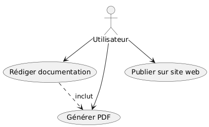
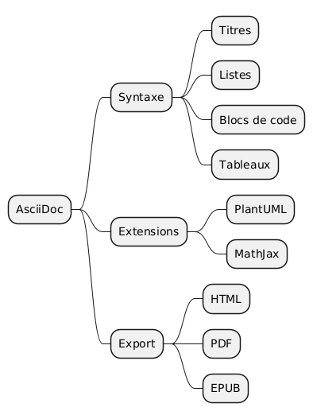

AsciiDoc : শিখুন এবং সינট্যাক্স আয়ত্ত করুন একটি কার্যকর নথিলিপি তৈরি করার জন্য
Publié le 20 June 2025
পরিচয়
AsciiDoc হচ্ছে একটি পক্ষপাতবহুল নমনীয় মার্কআপ ভাষা, যা কাঠামোবদ্ধ তাত্ত্বিক দস্তাবেজ, নিবন্ধ, বই বা প্রেজেন্টেশন রচনার জন্য ডিজাইন করা হয়েছে। এটি তার পঠনযোগ্যতা, সিনট্যাক্স সমৃদ্ধি এবং HTML, PDF, DocBook ইত্যাদি বিভিন্ন ফরম্যাট তৈরি করার ক্ষমতার কারণে ভিন্ন হয়। এই নিবন্ধে, আমরা AsciiDoc-এর মৌলিক সিনট্যাক্সের অন্বেষণ করব এবং দ্রুত শেখার জন্য কিছু টিপস প্রস্তাব করব।
AsciiDoc কী?
AsciiDoc একটি নথি বরণের ভাষা, Markdown-এর মতো কিন্তু আরও শক্তিশালী। এটি পাঠ্য, শিরোনাম, তালিকা, টেবিল, কোড ব্লক এবং আরও banyak কাঠামোগত করতে দক্ষতা প্রদান করে। এর বহুমুখীত্বে ওপেন সোর্স প্রকল্পের ডকুমেন্টেশন, বই রচনা এবং ওয়েব প্রকাশনার জনপ্রিয় পছন্দ হয়ে উঠেছে।
AsciiDoc কেন বেছে নেবেন?
-
পাঠযোগ্য এবং সহজবোদ্ধ সিনট্যাক্স।
-
জটিল গঠন (তালিকা, নোট, আদমন, ইত্যাদি) সমর্থন করা হয় ন্য
-
বহু-ফরম্যাটের উৎপাদন (HTML, PDF, ePub, DocBook…)
-
JBake বা Antora এর মতো স্ট্যাটিক সাইট জেনারেটরের সাথে সহজ ইন্টিগ্রেশন।
-
উন্নত কাস্টমাইজিং এট্রিবিউট এবং এক্সটেনশনের ساتھ
ইউসকেস ডায়াগ্রাম (Use Case)
ব্যবহার কেস ডায়াগ্রাম ব্যবহারকারীদের এবং সিস্টেমের মধ্যে প্রধান মিথস্ক্রিয়াগুলি উপস্থাপন করতে সক্ষম। এখানে ডকুমেন্টেশন সিস্টেমের জন্য একটি সহজ উদাহরণ দেওয়া হল:

মাইন্ড ম্যাপ ডায়াগ্রাম
মাইন্ড ম্যাপ (মানসিক মানচিত্র) AsciiDoc- সংযুক্ত কৌশল들과 তাদের সম্পর্ককে অনুসন্ধানের জন্য উপযোগী:

ফ্লো ডায়াগ্রাম (প্রবাহ)
একটি ফ্লো ডায়গ্রাম একটি AsciiDoc নথি তৈরি করার প্রক্রিয়া বর্ণনা করতে সক্ষম:

একটি AsciiDoc ফাইলের মৌলিক গঠন
একটি AsciiDoc ফাইল সাধারণত একটি শিরোনাম, ঐচ্ছিক বৈশিষ্ট্য, তারপর গঠিত কন্টেন্ট দিয়ে শুরু হয়। এখানে একটি ন্যূনতম উদাহরণ দেওয়া হল :
= Titre Principal
Auteur
2024-09-03
:toc:
:icons: font
Votre contenu commence ici...মৌলিক সিনট্যাক্স
শিরোনাম ও বিভাগ
AsciiDoc সমর্থন করে многу স্তরের শিরোনাম :
= Titre de niveau 1
== Titre de niveau 2
=== Titre de niveau 3
==== Titre de niveau 4বোল্ড, ইটালিক এবং মোনোস্পেস টেক্সট
*gras* _italique_ `monospace`বুলেট তালিকা এবং সংখ্যাবদ্ধ তালিকা
* Élément 1
* Élément 2
. Premier
. Deuxième
. Troisièmeলিঙ্ক এবং ছবি
Lien standard : https://asciidoc.org[AsciiDoc]
Image : image::images/logo.png[AsciiDoc Logo]কোড ব্লক
[source,python]def hello(): print("Bonjour AsciiDoc !")
তালিকা
|===
| Colonne 1 | Colonne 2
| Valeur A
| Valeur B
| Valeur C
| Valeur D
|===নোট ও সতর্কতাবোধক
AsciiDoc ভিজ্যুয়াল তথ্য ব্লক প্রদান করে:
NOTE: Ceci est une note importante.
TIP: Conseil utile pour l’utilisateur.
WARNING: Attention à ce point.অ্যাট্রিবিউট এবং ভেরিয়েবলের ব্যবহার
কাস্টম বৈশিষ্ট্য মúl्योंকে পুনর্ব্যবহার করতে অথবা আচরণ কনফিগার করতে অনুমতি দেয় :
:project-name: AsciiDoc Explorer
Le projet s’appelle {project-name}.সাধারণ ব্যবহারের ক্ষেত্র
-
ওপেন সোর্স প্রকল্প ডকুমেন্টেশন (README, প্রযুক্তিগত নির্দেশিকা) - বই ও ইবুক রচনা - স্থাýিম ওয়েবসাইটের স্বয়ংক্রিয় উৎপাদন (JBake, Antora) - প্রযুক্তিগত উপস্থাপনা
শ্রেষ্ঠ অনুশীলন
-
সামঞ্জস্যপূর্ণ শিরোনাম ব্যবহার করুন এবং স্বয়ংক্রিয় বিষয়সূচি (:toc:). - প্রধান বিষয়গুলোকে আকর্ষণ করার জন্য সতর্কবার্তা প্রাধান্য দিন। আপনার ফাইলগুলোকে রক্ষণাবেক্ষণ সহজ করতে সাজান। - ট্যাগযুক্ত কোড ব্লকগুলি ব্যবহার করে উদাহরণ দেখান।
উপসংহার
AsciiDoc হল একটি শক্তিশালী এবং সহজে অ্যাক্সেসযোগ্য টুল, যা যেকোনো প্রযুক্তিগত ডকুমেন্টেশন বা গঠিত লিখিত তৈরি করতে ব্যবহৃত হয়। এর সমৃদ্ধ সিনট্যাক্স এবং বহু‑ফরম্যাট জেনারেশনের সংমিশ্রণ, এটি দাবিত 가득 ডেভেলপার এবং রাইটারদের জন্য পছন্দের সহযোগী করে তোলে। আপনার পরবর্তী প্রকল্পে AsciiDoc চেষ্টা করুন এবং পার্থক্য খুঁজে বের করুন!
আরো দূরে যেতে
-
অফিসিয়াল ডকুমেন্টেশন : https://asciidoc.org - Asciidoctor : https://asciidoctor.org - JBake এবং AsciiDoc : https://jbake.org/docs/2.6.4/#asciidoc_support
আপনার অভিজ্ঞতা ও কৌশল মন্তব্যে শেয়ার করুন!